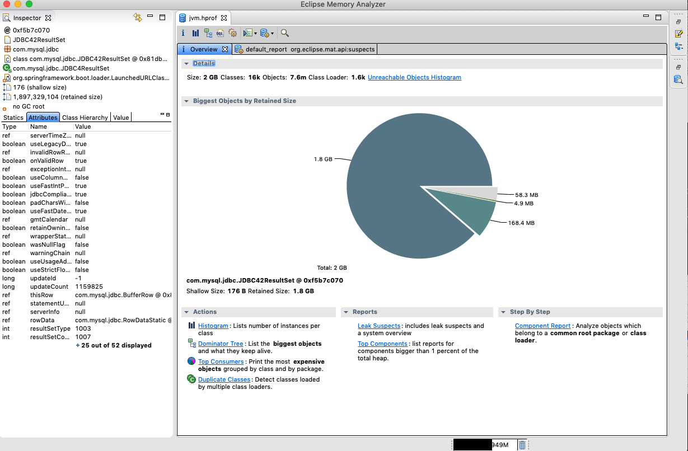
어느 날 서비스가 갑자기 다운되는 사례가 발생했다.
다행히 서버를 이중화시켜놓아서 장애가 발생하진 않았지만 그래도 왜 다운된 건지 원인 분석을 해야했다.
나의 실수로 인해 WAS 로그는 제대로 남겨져있지 않았고, CTO 님께서 힙 덤프 같은 거라도 떠져있나 보라고 하셔서 지푸라기라도 잪는 심정으로 기대를 했는데 희망을 저버리지 않았다.1
2-XX:+HeapDumpOnOutOfMemoryError \
-XX:HeapDumpPath=./jvm.hprof
위 옵션으로 인해 OOME(Out of Memory Exception) 발생 시 힙 덤프를 뜨게 해놓았는데 다행히 힙 덤프가 존재했다.
여기서 힙 덤프는 힙 메모리의 내용을 그대로 떠놓은 파일이다.
따라서 힙 메모리에 어떤 객체들로 가득 채워져있었는지 분석할 수 있게 되었다.
여기서 흥분해서 서버에서 vi 등등을 이용해 힙 덤프 파일을 열면 안 된다. (용량이 큰 로그 및 다른 파일도 물론 서버에서 절대 열면 안 된다.)
여는 순간 힙 메모리 사이즈만큼 서버의 메모리를 사용하게 돼서 서버가 다운될 수도 있다.
무조건 scp 등등의 명령어를 통해 로컬로 복사한 후에 열어보는 습관을 가지자.
Eclipse Memory Analyzer (MAT)
Eclipse Memory Analyzer 소개와 하나의 메모리 누수를 잡기까지에서 힙 덤프를 분석하는데 Eclipse MAT를 사용했다길래 나도 한 번 사용해보았다.
다운로드 페이지에서 OS에 맞는 어플리케이션을 받으면 되는데 나는 MacOSX 버전을 다운받았다.
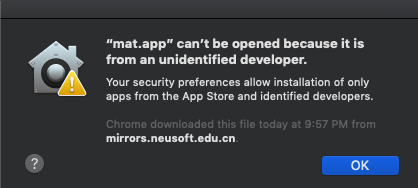
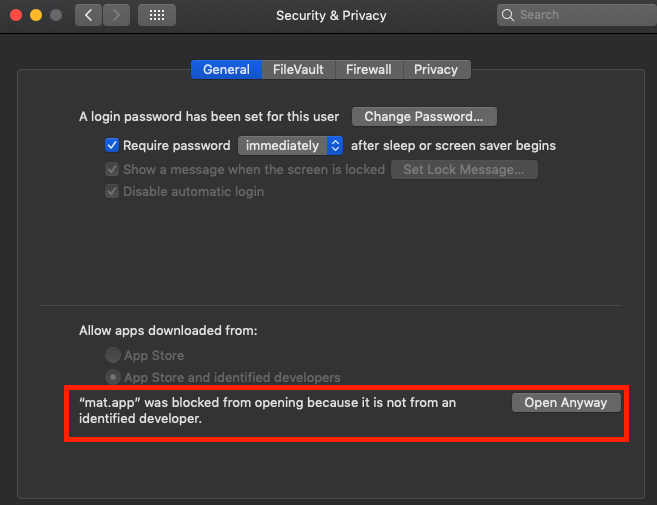
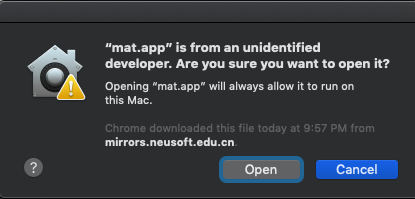
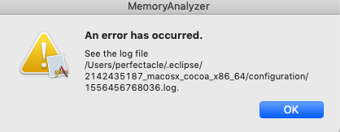
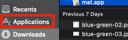
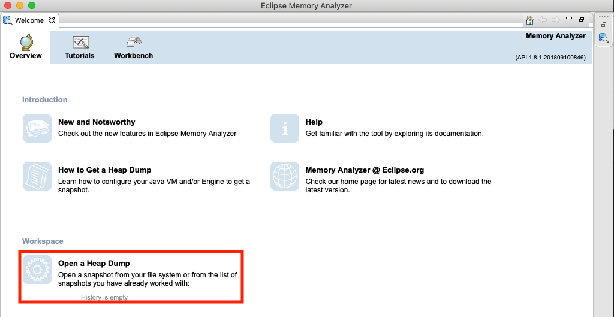
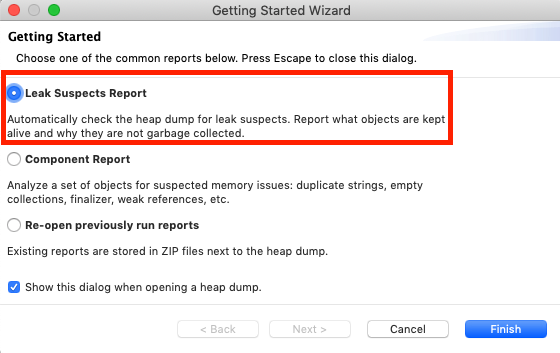
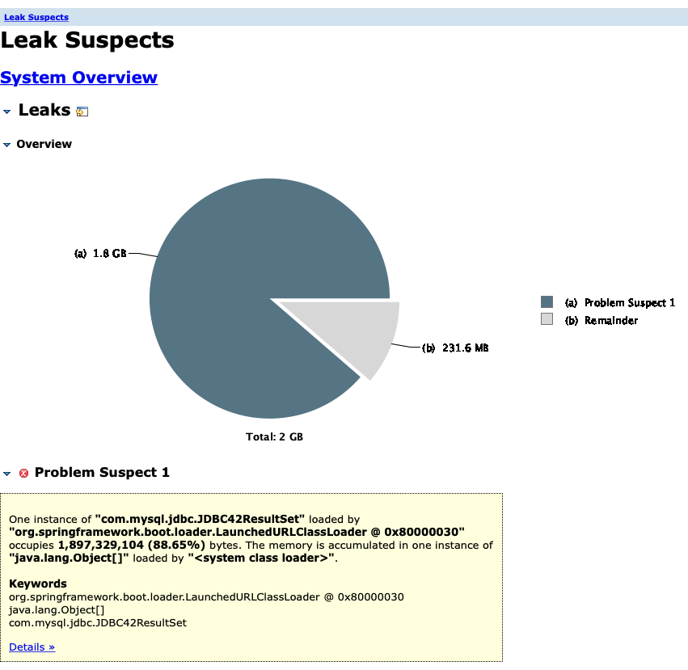
일단 툴의 사용방법도 잘 몰라서 무작정 메세지를 가지고 검색해보았다.
우선 최대한 일반적인 메세지만 뽑아서 One instance of "com.mysql.jdbc.JDBC42ResultSet" loaded by를 통해 구글링을 하니
MySQL Bugs: #90240: Possible memory leak in JDBC42PreparedStatement란 글이 눈에 띄었다.
메모리 릭? 버그? 그럼 우리가 쓰고 있는 MySQL 관련된 무언가에서 버그가 존재한다는 것인가?란 생각이 들었다.
Please try with MySQL connector 5.1.45 or 5.1.44 versions and let us know if memory leak happening.
위와 같이 답변이 달린 걸 보고 음… 역시 MySQL 버그인가 보구나… MySQL connector 버전을 올려보자~ 하고 gradle의 디펜던시를 보니 해당 버전보다도 높았다.
그래서 뭐지? 하고 답변을 끝까지 쭉 봤더니
It was an application error loading too many rows in memory, nothing to do with the connector.
어플리케이션에서 너무 많은 row를 로딩해서 생긴 문제라고 했다.
CTO 님께 말씀드려보니 CTO 님도 보시더니 아마도 저 문제가 맞을 거라고 하셨다.
그리고 우리가 저렇게 Row를 많이 불러올만한 쿼리를 쓰는 게 주문 내역 등등을 엑셀로 다운로드 받는 기능에서 날 거라고 말씀해주셨다.
따라서 해당 소스코드를 분석해봤는데 카운트 쿼리를 통해 사전에 너무 많은 Row를 불러오는 걸 방지하고 있었다.
그럼 어디서 이렇게 많은 Row를 불러오는 쿼리를 사용하지…? 도무지 이해가 가지 않았다.
그래서 다른 시니어 개발자 분의 도움을 받아 MAT의 간단한 사용 방법을 익혔다.
분석 및 해결
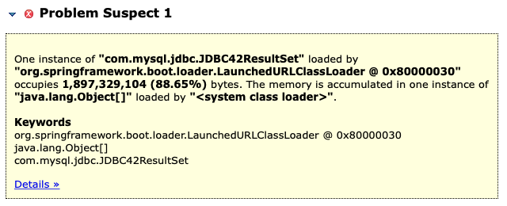
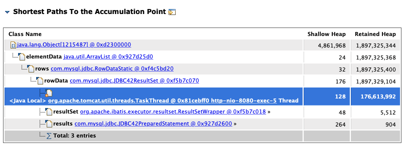
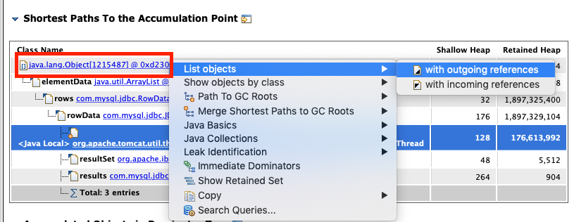
incoming이면 해당 object를 참조하는 object를, outgoing이면 해당 object가 참조하고 있는 object를 포함해서 보여준다.
자세한 설명은 Eclipse MAT — Incoming, Outgoing References를 참고하자.
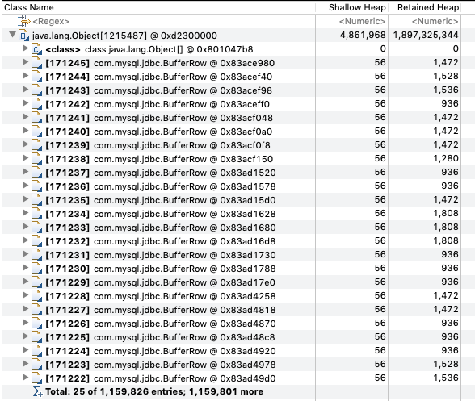
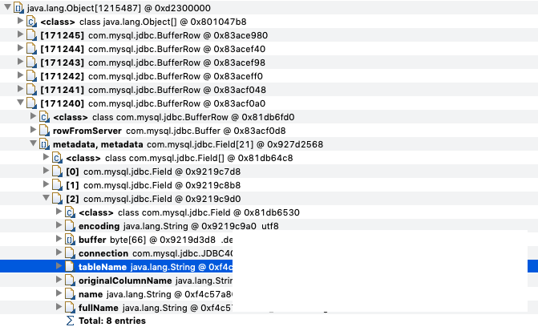
다른 Row들도 까봤더니 모두 동일한 필드 및 테이블에서 데이터를 가지고 오고 있었다.
이를 통해 해당 테이블의 모든 Row를 가져오는 거라고 의심했고 해당 테이블을 실제로 보니 대략 120만 Row의 데이터가 있었다.
실제로 소스코드도 보았더니 해당 테이블을 토대로 엑셀을 다운로드 받는 기능이 어딘가에 숨겨져있었고 제대로 조건문이 걸려있지 않았다.
또한 Nginx의 Access log를 보니 힙 덤프가 떠지기 바로 직전에 해당 API를 호출한 이력도 있었다.
결국 해당 쿼리문에 조건을 추가해서 배포함으로써 해당 이슈는 일단락 짓게 되었다.
어찌보면 별 거 아니고, 내가 로그를 제대로 남겼더라면 힙덤프까지 안 봤을지도 몰랐겠지만
내가 로그를 남기지 않는 실수로 인해 힙 덤프를 분석해볼 수 있는 값진 기회가 주어졌다. (절대로 노린 건 아니다.)
앞으로 이런 일이 있으면 안 되겠지만, 이런 일을 경험해보지 않고서 더 좋은 개발자로 다가가긴 힘든 것 같다.
역시 소프트웨어는 개발도 중요하지만 그 후에 유지보수를 해나가는 경험 또한 매우 중요한 것 같다.